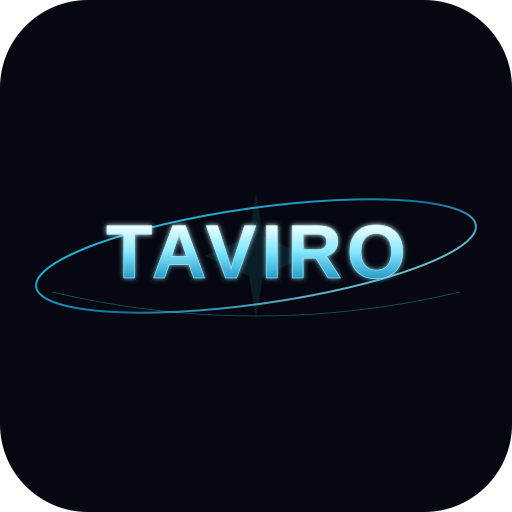

TAVIROOYUNA DÖN ↗Gizlilik Bildirimi
TAVIRO'nun çevrimdışı oyun, isteğe bağlı hesap, çevrimiçi skor ve kozmetik envanter özelliklerinde hangi verilerin işlendiğini açıklar.
Son güncelleme: 16 Kasım 2026 · Sürüm 1.01. Veri sorumlusu ve kapsam
TAVIRO bağımsız bir oyun projesidir. Bu sayfa mevcut web sürümünün teknik davranışını açıklar; hukuki danışmanlık veya mağaza platformlarının kendi gizlilik metinlerinin yerine geçmez.
2. İşlenebilen veriler
- Hesap: e-posta adresi ve Supabase Auth tarafından yönetilen oturum bilgileri.
- Pilot profili: kullanıcı adı, temsil edilen ülke ve isteğe bağlı profil fotoğrafı. Profil fotoğrafı ortak sıralama alanlarında herkese açık olabilir.
- Oyun ilerlemesi: seviye, XP, başarımlar, koşu özetleri, skorlar ve kozmetik envanteri.
- Çevrimiçi özellikler: Ranked maç sonuçları, Co-op oda/katılımcı ve maç sonuç bilgileri.
- Cihazda saklananlar: dil, ses ve erişilebilirlik tercihleri, çevrimdışı kayıt ve yerel kozmetik tercihleri.
3. Hizmet sağlayıcılar
- GitHub Pages: oyunun web dosyalarını barındırır.
- Supabase: isteğe bağlı hesap doğrulama, profil, bulut kayıtları, skor ve çevrimiçi oyun verilerini işler.
- FlagCDN: bazı ülke bayrak görsellerini sunar.
Bu servislerin kendi gizlilik ve güvenlik koşulları da geçerlidir. Oyun çevrimdışı oynanabilir; hesap açmak zorunlu değildir.
4. Kullanım amacı ve paylaşım
Veriler hesabı doğrulamak, ilerlemeyi cihazlar arasında eşitlemek, sıralamaları göstermek, Ranked/Co-op maçlarını yürütmek ve ödül sahipliğini doğrulamak için kullanılır. TAVIRO kişisel verileri satmaz ve bu sürümde üçüncü taraf reklam ağı veya reklam SDK'sı bulunmaz. Herkese açık profil alanları ve liderlik tabloları diğer oyuncular tarafından görülebilir.
5. Saklama ve güvenlik
Yerel kayıtlar tarayıcı depolamasında, hesapla eşitlenen veriler Supabase altyapısında tutulur. Uygun erişim kontrolleri ve veritabanı politikaları kullanılır; internet üzerinden hiçbir sistem için mutlak güvenlik garantisi verilemez. Oturum açma bilgilerini başkalarıyla paylaşma.
6. Silme ve gizlilik talepleri
Mevcut oyun arayüzünde henüz kendi kendine hesap silme akışı bulunmuyor. Veri erişimi veya silme talebi için proje sahibine GitHub profilinden ulaşılabilir. E-posta, parola, erişim belirteci veya başka hassas bilgileri herkese açık GitHub issue'larına yazma.
7. Çocukların ve gençlerin gizliliği
Hesap ve çevrimiçi özellikleri kullanmadan önce bulunduğun yerdeki yaş ve veli izni kurallarını kontrol et. Mağaza yayını öncesinde bu metin, hedef yaş grubu ve veri akışları sorumlu bir yetişkin tarafından gözden geçirilmelidir.
8. Mağaza yayını öncesi gerekli
Bu metin mevcut web sürümünü temel alan bir ilk bildirimdir. Google Play veya App Store yayını öncesinde resmi destek/gizlilik iletişim adresi, veri saklama süreleri, hesap silme yöntemi ve platforma özel beyanlar tamamlanıp hukuki açıdan incelenmelidir.